ЦЕНТРАЛЬНЫЙ
НАУЧНО-ИССЛЕДОВАТЕЛЬСКИЙ
И ПРОЕКТНО-ЭКСПЕРИМЕНТАЛЬНЫЙ ИНСТИТУТ
ПРОМЫШЛЕННЫХ ЗДАНИЙ И СООРУЖЕНИЙ (ЦНИИпромзданий)
ГОССТРОЯ СССР
НАУЧНО-ИССЛЕДОВАТЕЛЬСКИЙ ИНСТИТУТ
БЕТОНА И ЖЕЛЕЗОБЕТОНА (НИИЖБ)
ГОССТРОЯ СССР
ПОСОБИЕ
по проектированию железобетонных
ростверков
свайных фундаментов под колонны зданий
и сооружений
(к СНиП 2.03.01-84)
Утверждено
приказом ЦНИИпромзданий
Госстроя СССР
от 30 ноября 1984 г № 106а
Москва
Центральный институт типового проектирования
1985
Рекомендовано к изданию решением секции несущих конструкций научно-технического совета ЦНИИпромзданий Госстроя СССР.
Пособие по проектированию железобетонных ростверков свайных фундаментов под колонны зданий и сооружений (к СНиП 2.03.01-84 „Бетонные и железобетонные конструкции”)/ЦНИИпромзданий Госстроя СССР и НИИЖБ Госстроя СССР. - М.: ЦИТП Госстроя СССР, 1985.
В Пособии приведены рекомендации по проектированию железобетонных ростверков свайных фундаментов под колонны зданий различного назначения, указания по расчету стаканных ростверков под сборные, железобетонные колонны, плитных ростверков под монолитные железобетонные и стальные колонны, примеры расчета ростверков.
Для инженерно-технических работников проектных и строительных организаций.
Табл. 2, ил. 19.
Разработано ЦНИИпромзданий Госстроя СССР (инженеры Б.Ф. Васильев, В.А. Баженова, А.Я. Розенблюм) и НИИЖБ Госстроя СССР (канд. техн. наук Н.Н. Коровин) при участии в составлении примеров расчета ЦНИИЭП торгово-бытовых зданий (кандидаты техн. наук В.Л. Морозенский, Б.В. Карабинов).
При пользовании Пособием необходимо учитывать утвержденные изменения строительных норм и правил и государственных стандартов, публикуемые в журнале ,,Бюллетень строительной техники" Госстроя СССР и информационном указателе „Государственные стандарты СССР" Госстандарта.
1.1. Пособие по проектированию железобетонных ростверков свайных фундаментов под колонны зданий и сооружений составлено к СНиП 2.03.01-84 „Бетонные и железобетонные конструкции” и распространяется на проектирование монолитных ростверков квадратной и прямоугольной формы в плане, с кустами из двух, четырех и более свай, под сборные и монолитные железобетонные колонны и под стальные колонны.
Примечание. Свайные фундаменты с кустами из двух свай рекомендуется применять только в каркасных бескрановых зданиях при условии расположения свай в створе пролета здания и величине эксцентриситета приложения нагрузки в перпендикулярном направлении не превышающей 5 см.
При проектировании ростверков, предназначенных для эксплуатации в сейсмических районах, а также в агрессивных средах должны соблюдаться дополнительные требования, регламентированные соответствующими нормативными документами.
1.2. Ростверк является элементом свайного фундамента, опирающимся на куст свай (черт. 1.). Проектировать куст свай следует в соответствии со СНиП II-17-77 „Свайные фундаменты”.
Сопряжение ростверков со сборными железобетонными колоннами предусматривается стаканным (с подколонником или без него) с монолитными железобетонными колоннами - монолитным, со стальными колоннами - с помощью анкерных болтов.
Черт. 1. Схема образования пирамиды продавливания под сборной железобетонной колонной прямоугольного сечения
1.3. Расчет ростверков производится по предельным состояниям первой группы (по прочности) и по предельным состояниям второй группы (по раскрытию трещин).
Величины нагрузок и воздействий, значения коэффициентов надежности по нагрузке и коэффициентов сочетаний, а также подразделения нагрузок на постоянные и временные - длительные, кратковременные, особые - должны приниматься в соответствии с требованиями СНиП 2.01.07-85 "Нагрузки и воздействия" и СНиП 2.03.01-84 "Бетонные и железобетонные конструкции", а значения коэффициентов надежности по назначению - согласно „Правилам учета степени ответственности зданий и сооружений при проектировании конструкций”.
При определении нагрузок от колонн на ростверки следует учитывать увеличение моментов в месте заделки колонн от действия вертикальных нагрузок при прогибе колонн.
При расчете ростверков расчетные сопротивления бетона следует умножать на коэффициент условий работы бетона gb2, принимаемый равным 1,1 или 0,9 в зависимости от длительности действия нагрузок. Коэффициент условий работы бетона gb2 принимается равным 1.
1.4. Расчет ростверков на сваях сплошного круглого сечения производится так же, как и на сваях квадратного сечения. При этом в расчете ростверка сечения круглых свай условно приводятся к сваям квадратного сечения, эквивалентного круглым сваям по площади, т.е. с размером стороны сечения, равным 0,89 dsv, где dsv - диаметр свай.
2.1. Расчет по прочности плитной части ростверков под сборные железобетонные колонны производится: на продавливание колонной; продавливание угловой сваей; по прочности наклонных сечений на действие поперечной силы; на изгиб по нормальному и наклонному сечениям; на местное сжатие (смятие) под торцами колонн. Помимо этого проверяется прочность стакана ростверка.
Расчет ростверков на продавливание колонной
2.2. Расчет на продавливание колонной центрально-нагруженных ростверков свайных фундаментов с кустами из четырех и более свай производится по формуле (1) из условия, что продавливание происходит по боковой поверхности пирамиды, высота которой равна расстоянию по вертикали от рабочей арматуры плиты до низа колонны, меньшим основанием служит площадь сечения колонны, а боковые грани, проходящие от наружных граней колонны до внутренних граней свай, наклонены к горизонтали под углом не менее 45° и не более угла, соответствующего пирамиде с c=0,4h0 (см. черт. 1):
где Fper - расчетная продавливающая сила,
равная сумме реакций всех свай, расположенных за пределами нижнего основания
пирамиды продавливания, определяемая из условия 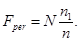
При этом реакции свай подсчитываются только от продольной силы N, действующей в сечении колонны у верхней горизонтальной грани ростверка;
здесь n - число свай в ростверке;
n1 - число свай, расположенных за пределами нижнего основания пирамиды продавливания;
Rbt - расчетное сопротивление бетона растяжению для железобетонных конструкций с учетом коэффициента условий работы бетона;
h0 - рабочая высота сечения ростверка на проверяемом участке, равная расстоянию от рабочей арматуры плиты до низа колонны, условно расположенного на 5 см выше дна стакана;
иi - полусумма оснований i-й боковой грани фигуры продавливания с числом граней m;
сi - расстояние от грани колонны до боковой грани сваи, расположенной за пределами фигуры продавливания;
a - коэффициент, учитывающий частичную передачу продольной силы на плитную часть через стенки стакана, определяемый по формуле
здесь Af - площадь боковой поверхности колонны, заделанной в стакан фундамента, определяемая по формуле
здесь bcol, hcol - размеры сечения колонны;
hапс - длина заделки колонны в стакан фундамента.
При расчете на продавливание центрально-нагруженных ростверков колонной прямоугольного сечения формула (1) приобретает следующий вид:
где Fреr; Rbt; h0 - см. формулу (1);
bcol; hcol - см. формулу (3);
c1 - расстояние от грани колонны с размером bcol до параллельной ей плоскости, проходящей по внутренней грани ближайшего ряда свай, расположенных за пределами нижнего основания пирамиды продавливания;
c2 - расстояние от грани колонны с размером hcol до параллельной ей плоскости, проходящей по внутренней грани ближайшего ряда свай, расположенных за пределами нижнего основания пирамиды продавливания.
Отношение 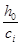
При сi>h0 ci принимается равным h0; при сi<0,4h0 сi принимается равным 0,4h0.
При расчете на продавливание колонной квадратного сечения центрально нагруженных ростверков при c1=с2=с формула (4) будет иметь следующий вид:
При установке в пределах пирамиды продавливания поперечной арматуры расчет должен производиться из условия
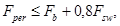
но не более 2Fb. Сила Fb принимается равной правой части условия (1).
Сила Fsw определяется как сумма всех поперечных усилий, воспринимаемых хомутами, пересекающими боковые грани пирамиды продавливания, по формуле
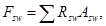
где Rsw - расчетное сопротивление поперечной арматуры растяжению при расчете наклонных сечений на действие поперечной силы;
Asw - суммарная площадь сечения поперечной арматуры, пересекающей боковые грани пирамиды продавливания.
2.3. Расчет на продавливание колонной внецентренно нагруженных
ростверков производится по тем же формулам, что и на продавливание
центрально-нагруженных ростверков, но при этом расчетная величина
продавливающей силы принимается равной 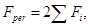 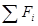
В этом случае реакции свай подсчитываются от продольной силы и момента, действующих в сечении колонны у верхней горизонтальной грани ростверка.
При моментах, действующих в поперечном и продольном направлениях, величина , определяется в каждом направлении отдельно; в расчет принимается большая из этих величин.
Примечание. При стаканном
сопряжении колонны с ростверком и эксцентриситете продольной силы в колонне 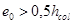 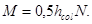 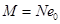
2.4. При сборных железобетонных двухветвевых колоннах, имеющих общий стакан, расчет ростверка на продавливание выполняется как при колонне со сплошным прямоугольным сечением, соответствующим внешним габаритам двухветвевой колонны (черт. 2).
Черт. 2. Схема образования пирамиды продавливания под сборной железобетонной двухветвевой колонной
2.5. При многорядном расположении свай (черт. 3) помимо расчета на продавливание колонной по пирамиде продавливания, боковые стороны которой проходят от наружной грани колонны до ближайших граней свай, должна быть проведена проверка на продавливание ростверка колонной в предположении, что продавливание происходит по поверхности пирамиды, две или все четыре боковые стороны которой наклонены под углом 45°; при этом реакции свай, находящихся в пределах площади нижнего основания пирамиды продавливания, не учитываются.
Черт. 3. Схема образования пирамид продавливания под сборной железобетонной колонной при многорядном расположении свай за наружными гранями колонны
2.6. Расчет на продавливание колонной центрально-нагруженных ростверков свайных фундаментов с кустами из двух свай (черт. 4) производится из условия
где Fper - расчетная продавливающая сила, равная сумме реакций обеих свай от продольной силы N, действующей в колонне;
Rbt, h0; c1; bcol, hcol, a - обозначения те же, что в формулах (1) и (3);
с2 - расстояние от плоскости грани колонны с размером hcol до наружной грани штатной части ростверка.
Черт. 4. Схема образования пирамиды продавливания под сборной железобетонной колонной в двухсвайном фундаменте
2.7. Расчет на продавливание колонной внецентренно нагруженных ростверков свайных фундаментов с кустами из двух свай также производится по формуле (8), но при этом расчетная величина продавливающей силы принимается равной Fper=2Fi, где Fi - реакция наиболее нагруженной сваи от продольной силы N и момента М, действующих в колонне.
2.8. При стаканном сопряжении колонны с ростверком, когда стенки стакана подколонника имеют большую толщину (ds>0,75hp), или в штатных ростверках (черт. 5) при заглублении колонны в штатную часть ростверка не менее чем на 1/3 ее высоты, помимо расчета ростверка на продавливание в соответствии с пп. 2.2 - 2.7 следует производить расчет ростверка на раскалывание колонной от силы N по формуле
где N - продольная сила, действующая в сечении колонны у верхней горизонтальной грани ростверка;
m - коэффициент, вычисляемый по формуле
здесь ssid - напряжение бокового обжатия, МПа, определяемое по формуле
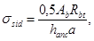
здесь Ab - наименьшая площадь вертикального сечения ростверка по оси колонны за вычетом вертикальной площади сечения стакана и площади трапеции, расположенной под колонной, с наклоненными под углом 45° сторонами (на черт. 5 площадь трапеции показана пунктирными линиями);
Rbt, a - обозначения те же, что в формуле (1);
а - условное обозначение вводимой в расчет стороны сечения колонны (bcol или hcol);
Допускается принимать m=0,75.
Найденная по формуле (9)
несущая способность ростверка по раскалыванию сравнивается с его несущей
способностью на продавливание ( 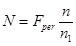
Черт. 5. Схема свайного фундамента с плитным ростверком
При этом несущая способность ростверка, определенная по формуле (9), должна приниматься не более его несущей способности на продавливание колонной от верха ростверка от продольной силы и момента, действующих в этом сечении. Расчет на продавливание от верха ростверка производится по пп. 2.2 - 2.7 с введением в правую часть формул (1); (4); (5); (8) коэффициента 0,75 и принимая h0 равным расстоянию от рабочей арматуры плиты до верхней горизонтальной грани ростверка.
Расчет ростверков на продавливание угловой сваей
2.9. Расчет ростверков на продавливание угловой сваей производится из условия
где Fai - расчетная нагрузка на угловую сваю с учетом моментов в двух направлениях, включая влияние местной нагрузки (например, от стенового заполнения);
h01 - рабочая высота сечения на проверяемом участке, равная расстоянию от верха свай до верхней горизонтальной грани плиты ростверка или его нижней ступени.
иi - полусумма оснований i-й боковой грани фигуры продавливания высотой h01, образующейся при продавливании плиты-ростверка угловой сваей;
bi - коэффициент, определяемый по формуле
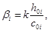
здесь k - коэффициент, учитывающий снижение несущей способности плиты ростверка в угловой зоне.
В преобразованном виде формула (12) будет иметь вид
где 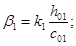 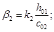
b01; b02 - расстояния от внутренних граней угловых свай до наружных граней плиты ростверка (черт. 6);
c01; c02 - расстояния от внутренних граней угловых свай до ближайших граней подколонника ростверка или до ближайших граней ступени при ступенчатом ростверке;
b1 и b2 - значения этих коэффициентов принимаются по табл. 1.
Черт. 6. Схема продавливания ростверка угловой сваей
Таблица 1
|
h01 c0i |
bi |
h01 c0i |
bi |
h01 c0i |
bi |
h01 c0i |
bi |
|
1 |
0,6 |
1,4 |
0,765 |
1,8 |
0,887 |
2,2 |
0,968 |
|
1,05 |
0,622 |
1,45 |
0,782 |
1,85 |
0,9 |
2,25 |
0,974 |
|
1,1 |
0,645 |
1,5 |
0,8 |
1,9 |
0,912 |
2,3 |
0,98 |
|
1,15 |
0,666 |
1,55 |
0,815 |
1,95 |
0,92 |
2,35 |
0,986 |
|
1,2 |
0,688 |
1,60 |
0,832 |
2 |
0,932 |
2,40 |
0,991 |
|
1,25 |
0,709 |
1,65 |
0,845 |
2,05 |
0,941 |
2,45 |
0,996 |
|
1,3 |
0,728 |
1,7 |
0,86 |
2,1 |
0,951 |
2,5 |
1 |
|
1,35 |
0,746 |
1,75 |
0,875 |
2,15 |
0,96 |
Примечания: 1. При 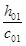 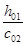 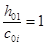
При и , большем 2,5, коэффициенты b1 и b2 принимаются равными 1, а величины c01 и с02 равными 0,4h01.
2. В тех случаях, когда угловая свая в ростверках с подколонником по проекту заходит в плане за обе грани подколонника на 50 мм и более, проверка на продавливание плиты ростверка угловой сваей не производится.
Расчет по прочности наклонных сечений ростверков на действие поперечной силы
где 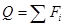
b - ширина подошвы ростверка;
Rbt - обозначение то же, что в формуле (1);
h0 - расчетная высота в рассматриваемом сечении ростверка;
с - длина проекции наклонного сечения, принимаемая равной расстоянию от плоскости внутренних граней свай до ближайшей грани подколонника или ступени ростверка (черт. 7,a), а при плитных ростверках - до ближайшей грани колонны (черт.7,б).
Значение 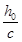 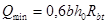 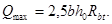
Примечание. В ступенчатых ростверках при проверке прочности наклонных сечений, пересекающих две ступени, за расчетную величину b в формуле (15) принимается приведенная величина bred определяемая по формуле
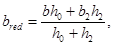
где b - ширина нижней ступени (ширина подошвы ростверка);
b2 - ширина второй ступени;
h0 - расчетная высота нижней ступени ростверка;
h0 - высота второй ступени ростверка.
2.11. При многорядном расположении свай проверка прочности наклонных сечений ростверков на действие поперечной силы производится по сечениям, проходящим через внутренние грани каждого ряда свай (черт.7,в).
Черт. 7. Схемы, принимаемые при расчете прочности наклонных сечений ростверка по поперечной силе
а - для ростверка с подколонниками; б - для плитного ростверка; в - для ростверка с многорядным расположением свай за гранью подколонника
Расчет ростверков на изгиб
2.13. Расчетный изгибающий момент для каждого сечения определяется как сумма моментов от реакций свай (от расчетных нагрузок на ростверк) и от местных расчетных нагрузок, приложенных к консольному свесу ростверка по одну сторону от рассматриваемого сечения:
где Mxi; Myi - изгибающие моменты в рассматриваемых сечениях;
Fi - расчетная нагрузка на сваю, нормальная к площади подошвы ростверка;
хi; уi - расстояния от осей свай до рассматриваемого сечения;
Mfx; Mfy - изгибающие моменты в рассматриваемых сечениях от местной нагрузки.
При работе свай на выдергивающие нагрузки необходимо производить проверку прочности ростверка на изгиб на действие отрицательных реакций свай.
2.14. Площадь сечения арматуры, параллельной стороне а, на всю ширину ростверка определяется (черт. 8):
в разрезе 1-1
в разрезе 2-2 по грани ступени (подколонника)
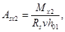
Площадь сечения арматуры, параллельной стороне b, на всю длину ростверка определяется (см. черт.8):
в разрезе 3-3
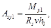
в разрезе 4-4 по грани ступени (подколонника)
где Мх1; Мх2 - изгибающие моменты на всю ширину ростверка соответственно в разрезах 1-1 и 2-2;
My1 и Му2 - изгибающие моменты на всю длину ростверка соответственно в разрезах 3-3 и 4-4;
h0 - рабочая высота ростверка в разрезах 1-1 и 3-3;
h01 - рабочая высота ростверка в разрезах 2-2 и 4-4;
Rs - расчетное сопротивление арматуры;
v - безразмерный коэффициент, определяемый по табл. 2 в зависимости от коэффициента q.
Черт. 8. Расчетная схема при определении арматуры подошвы ростверка
Таблица 2
|
v |
q |
v |
q |
v |
q |
v |
|
|
0,01 |
0,995 |
0,18 |
0,9 |
0,314 |
0,805 |
0,412 |
0,71 |
|
0,02 |
0,99 |
0,188 |
0,895 |
0,32 |
0,8 |
0,416 |
0,705 |
|
0,03 |
0,985 |
0,196 |
0,89 |
0,326 |
0,795 |
0,42 |
0,7 |
|
0,039 |
0,98 |
0,204 |
0,885 |
0,332 |
0,79 |
0,428 |
0,69 |
|
0,049 |
0,975 |
0,211 |
0,88 |
0,338 |
0,785 |
0,435 |
0,68 |
|
0,058 |
0,97 |
0,219 |
0,875 |
0,343 |
0,78 |
0,442 |
0,67 |
|
0,068 |
0,965 |
0,226 |
0,87 |
0,349 |
0,775 |
0,449 |
0,66 |
|
0,077 |
0,96 |
0,234 |
0,865 |
0,354 |
0,77 |
0,455 |
0,65 |
|
0,086 |
0,955 |
0,241 |
0,86 |
0,36 |
0,765 |
0,461 |
0,64 |
|
0,095 |
0,95 |
0,248 |
0,855 |
0,365 |
0,76 |
0,466 |
0,63 |
|
0,104 |
0,945 |
0,255 |
0,85 |
0,37 |
0,755 |
0,471 |
0,62 |
|
0,113 |
0,94 |
0,262 |
0,845 |
0,375 |
0,75 |
0,476 |
0,61 |
|
0,122 |
0,935 |
0,269 |
0,84 |
0,38 |
0,745 |
0,48 |
0,6 |
|
0,13 |
0,93 |
0,276 |
0,835 |
0,385 |
0,74 |
0,489 |
0,575 |
|
0,139 |
0,925 |
0,282 |
0,83 |
0,39 |
0,735 |
0,495 |
0,55 |
|
0,147 |
0,92 |
0,289 |
0,825 |
0,394 |
0,73 |
0,499 |
0,525 |
|
0,156 |
0,915 |
0,295 |
0,82 |
0,399 |
0,725 |
0,5 |
0,5 |
|
0,164 |
0,91 |
0,302 |
0,815 |
0,403 |
0,72 |
- |
- |
|
0,172 |
0,905 |
0,308 |
0,81 |
0,407 |
0,715 |
- |
- |
Значение коэффициента q определяется по формулам:
для разреза 1-1
для разреза 2-2
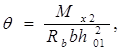
для разреза 3-3
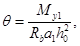
для разреза 4-4
(26)
где Rb - расчетное сопротивление бетона осевому сжатию;
а, b - размеры подошвы ростверка;
a1, b1 - размеры сечения стаканной части ростверка.
2.15. Прочность наклонных сечений по изгибающему моменту считается обеспеченной, если поперечная сила от внешней нагрузки, действующая в наклонном сечении, не менее чем в 1,25 раза меньше, чем поперечная сила в том же сечении, определенная по формуле (15) при минимальном значении =0,5.
Если это условие не соблюдается, должна быть проверена анкеровка арматуры в зоне расположения крайних свай путем расчета прочности наклонных сечений по изгибающему моменту, определяемому по формуле
где с - расстояние от плоскости внутренних граней свай крайнего ряда до ближайшей грани подколонника или ступени ростверка, или до ближайшей грани колонны при плитных ростверках (черт. 9);
dsv - размер сечения сваи;
- сумма реакций всех свай крайнего ряда со стороны рассматриваемого сечения плитной части ростверка;
Mf - изгибающий момент от местной нагрузки (собственный вес ростверка, засыпка земли на уступы плитной части ростверка и т.п.).
Черт. 9. Расчетная схема при проверке прочности наклонных сечений ростверка на действие изгибающего момента
Требуемая площадь арматуры из условия обеспечения прочности наклонного сечения
(28)
Длина анкеровки арматуры определяется по формуле
(29)
где wan, Dlan - определяются по СНиП 2.03.01-84 для условий заделки арматуры в сжатом бетоне (wan = 0,5; lan = 8);
As,cal - требуемая площадь сечения арматуры из расчета плитной части ростверка;
As,fac - фактическая площадь сечения арматуры плитной части ростверка;
d - диаметр рабочей арматуры.
Условие анкеровки арматуры
(30)
где lfac определяется из условия
(31)
где l0 - расстояние от наружной стороны сваи до наружной грани ростверка;
а - защитный слой бетона до торца арматуры.
На длине анкеровки арматуры к продольным стержням сетки должен быть приварен хотя бы один поперечный стержень.
Расчет стаканной части ростверков
2.16. Стенки стакана ростверка должны рассчитываться как железобетонные элементы в соответствии с требованиями СНиП 2.03.01-84 с учетом дополнительных требований, изложенных в пп. 2.6.9 - 2.6.13 „Пособия по проектированию фундаментов на естественном основании под колонны зданий и сооружений”.
В ростверках стаканного типа, когда отношение толщины стенок стакана к высоте его уступа или к глубине стакана равно или более 0,75, стенки стакана допускается не армировать.
В случае действия продольной силы N в пределах ядра сечения колонны () поперечное армирование стенок стакана назначается конструктивно.
Расчет ростверков на местное сжатие
2.17. При проектировании ростверков свайных фундаментов под сборные железобетонные колонны должна быть произведена проверка прочности на местное сжатие (смятие) ростверка под торцами колонн.
2.18. Расчет на местное сжатие (смятие) под торцами сборных железобетонных колонн квадратного и прямоугольного сечения и под торцами двухветвевых колонн следует выполнять в соответствии с рекомендациями „Пособия по проектированию фундаментов на естественном основании под колонны зданий и сооружений”.
2.19. Расчет ростверков под монолитные железобетонные колонны по прочности производится на продавливание ростверков колонной, на продавливание угловой сваей плиты ростверка, по поперечной силе в наклонных сечениях и на изгиб ростверка.
2.20. Расчет ростверка на продавливание колонной производится по пп. 2.2; 2.3; 2.5, при этом в формулах (4) и (5) рабочая высота ростверка ho должна приниматься от верха ростверка до верха нижней арматуры сетки (черт. 10).
Черт. 10. Схема образования пирамиды продавливания под монолитной железобетонной колонной
Расчет ростверков на продавливание угловой сваей производится по п. 2.9, расчет прочности наклонных сечений ростверка по поперечной силе - по пп. 2.10, 2.11, а расчет ростверка на изгиб - по пп. 2.12 - 2.15.
2.21. Расчет ростверков под стальные колонны по прочности производится: на продавливание ростверка колонной; на продавливание ростверка угловой сваей; по поперечной силе в наклонных сечениях; на изгиб ростверка и на местное сжатие (смятие) под стальными опорными плитами базы стальных колонн.
Расчет ростверка на продавливание колонной
2.22. При стальных колоннах сплошного сечения (черт. 11) и при сквозных (решетчатых) колоннах, имеющих единую стальную жесткую базу (черт. 12), расчет ростверка на продавливание колонной производится из условия
где Fper - расчетная продавливающая сила. При центрально-нагруженных ростверках величина Fper принимается равной сумме реакций всех свай, расположенных за пределами нижнего основания пирамиды продавливания от нормальной силы, действующей в колонне у верхней горизонтальной грани ростверка. При внецентренно нагруженных ростверках расчетная величина продавливающей силы принимается равной где - сумма реакций всех свай, расположенных с одной стороны от оси в наиболее нагруженной части ростверка, за вычетом свай, расположенных в зоне пирамиды продавливания с этой же стороны от оси колонны;
abas, bbas - размеры опорной стальной плиты базы колонны;
h0 - рабочая высота ростверка, принимаемая от верха нижней рабочей арматуры сетки до подошвы опорной стальной плиты базы колонны;
c1 - расстояние от боковой грани опорной стальной плиты базы колонны до параллельной ей плоскости, проходящей по внутренней грани ближайшего ряда свай, расположенных за пределами нижнего основания пирамиды продавливания;
с2 - расстояние от продольной грани опорной стальной плиты базы колонны до параллельной ей плоскости, проходящей по внутренней грани ближайшего ряда свай, расположенных за пределами нижнего основания пирамиды продавливания.
Остальные обозначения - см. п. 2.2.
Черт. 11. Схема образования пирамиды продавливания под стальной колонной сплошного сечения
Черт. 12. Схема образования пирамиды продавливания под сквозной (решетчатой) стальной колонной, имеющей единую стальную базу
2.23. При сквозных решетчатых стальных колоннах, имеющих раздельные базы под каждую ветвь колонны (черт. 13), расчет ростверков производится на продавливание наиболее нагруженной ветвью колонны по периметру стальной плиты базы этой ветви по формуле (32). При этом за расчетную величину продавливающей силы принимается где - сумма реакций всех свай, расположенных с наружной стороны от оси ветви, за вычетом реакций свай, расположенных в зоне пирамиды продавливания с этой же стороны от оси ветви колонны.
Черт. 13. Схема образования пирамиды продавливания под сквозной (решетчатой) колонной, имеющей раздельные стальные базы под каждой ветвью
Расчет ростверков на продавливание угловой сваей
2.24. Расчет ростверков на продавливание угловой сваей при стальных колоннах производится по п. 2.9; при этом величины c01 и c02, входящие в формулу (14), в плитных ростверках принимаются равными расстояниям от плоскостей внутренних граней угловой сваи до соответствующих ближайших граней опорного стального листа базы колонны, а при ступенчатых ростверках - до соответствующих ближайших граней ступени ростверка.
Расчет прочности наклонных сечений ростверка по поперечной силе
2.25. Расчет прочности наклонных сечений ростверка по поперечной силе производится по пп. 2.10 и 2.11, при этом величина с (длина проекции наклонного сечения) принимается равной расстоянию от плоскости внутренних граней свай до ближайшей грани опорной стальной плиты базы колонны, а при ступенчатых ростверках - до ближайшей грани ступени.
Расчет ростверков на изгиб
2.26. Расчет прочности ростверков на изгиб при стальных колоннах производится в сечениях по осям ветвей колонн, а в ступенчатых ростверках, кроме того, - в сечениях по граням ступеней ростверка.
2.27. Расчетный изгибающий момент для каждого сечения определяется как сумма моментов от реакции свай (от расчетных нагрузок на ростверк) и расчетных нагрузок, приложенных к консольному свесу ростверка по одну сторону от рассматриваемого сечения.
Величины изгибающих моментов определяются по формулам (17) и (18), сечения арматуры - по формулам (19) - (22) (см. пп. 2.12 - 2.15).
Величина с в формуле (27) принимается равной расстоянию от плоскости внутренних граней свай крайнего ряда до ближайшей боковой грани стальной опорной плиты базы колонны при плитном ростверке или до грани ступени при ступенчатом ростверке.
При применении для армирования подошвы ростверка арматуры из стали класса A-III необходимо производить проверку ширины нормальных трещин в соответствии с рекомендациями ,,Пособия по проектированию фундаментов на естественном основании под колонны зданий и сооружений”.
4.1. При центральной нагрузке форму ростверков отдельных свайных фундаментов в плане рекомендуется принимать квадратной, если этому не препятствуют фундаменты соседних зданий, подземные сооружения, фундаменты под оборудование и т.п.
При внецентренной нагрузке ростверки рекомендуется принимать прямоугольной формы в плане с соотношением сторон, определяемым на основе сравнений вариантов из условия размещения свай, их несущей способности, эксцентриситета нагрузок и т.п.
Примеры расположения свай под ростверками показаны на черт. 14.
Черт. 14. Примеры расположения свай в свайных фундаментах
4.2. Размеры ростверков рекомендуется принимать:
в плане подошвы, ступеней - кратными 300 мм, подколонника - кратными 150 мм;
по высоте плитной части, ступеней и подколонника - кратными 150 мм.
Расстояние от края плиты ростверка до ближайших граней свай - не менее 100 мм.
4.3. Проектный класс бетона по прочности на сжатие для ростверков свайных фундаментов рекомендуется назначать не ниже В12,5.
4.4. Для армирования ростверков применяется стержневая горячекатаная арматура периодического профиля класса A-III и круглая (гладкая) класса A-I.
4.5. При стаканном сопряжении сборных железобетонных колонн с ростверками толщина дна стакана принимается по расчету ростверка на продавливание колонной, но не менее 250 мм.
При конструировании стаканной части ростверка следует руководствоваться „Пособием по проектированию фундаментов на естественном основании под колонны зданий и сооружений”.
4.6. Бетон для замоноличивания колонн в стакане ростверка должен быть не ниже класса бетона ростверка и не ниже класса бетона колонны, уменьшенного на одну ступень.
4.7. Марка бетона ростверков по морозостойкости должна приниматься по СНиП 2.03.01-84 как для конструкций с возможным эпизодическим воздействием температур ниже 0°С в водонасыщенном состоянии.
4.8. Армирование подошв ростверков рекомендуется осуществлять сварными сетками по ГОСТ 23279-84.
Диаметры продольных и поперечных стержней сеток следует назначать из условия обеспечения требуемой по расчету площади сечения арматуры, а также жесткости сеток при монтаже и транспортировании.
Минимальный процент армирования плит ростверка не регламентируется.
Сварные сетки для армирования подошвы ростверка рекомендуется изготавливать из арматурной стали класса A-III.
4.9. При заделке верхних концов свай в плиту ростверка на глубину 50 мм арматурные сетки плиты ростверка укладываются сверху на оголовки свай.
При заделке свай в плиту ростверка на большую глубину стержни сеток, попадающие на сваи, вырезаются, и сетки укладываются с защитным слоем 50 мм.
В случае необходимости по расчету взамен вырезанных стержней по контуру свай укладываются дополнительно местные сетки или отдельные стержни, привязанные к основным сеткам.
4.10. Армирование стенок стакана ростверка под сборные железобетонные колонны производится продольной и поперечной арматурой (черт. 15).
Поперечное армирование стенок стакана следует выполнять в виде сварных плоских сеток с расположением стержней у наружных и внутренних поверхностей стенок стакана.
Диаметр стержней сеток следует принимать по расчету, но не менее 8 мм и не менее 1/4 диаметра продольных стержней арматуры стенок стакана ростверка.
Расстояние между сетками следует назначать не более 1/4 глубины стакана и не более 200 мм.
В случаях, когда сечение арматуры сеток определяется расчетом, в верхней части стакана рекомендуется устанавливать 2-3 сетки с шагом 50 мм.
Минимальная площадь продольной арматуры As и Аs1 в стенках стакана должна составлять не менее 0,05% расчетного сечения бетона стакана. При этом должны удовлетворяться требования по анкеровке продольной арматуры стенок стакана в плитной части ростверка.
Продольная арматура стенок стакана устанавливается по расчету и должна проходить внутри ячеек сеток поперечного армирования.
Диаметр продольных рабочих стержней стенок стакана должен быть не менее 12 мм.
Черт. 15. Армирование стаканной части ростверка
1 - сетки поперечного армирования; 2 - пространственный каркас; 3 - сетки косвенного армирования
4.11. Сетки косвенного поперечного армирования, необходимые по расчету на местное сжатие (смятие) под торцами сборных железобетонных колонн, устанавливают не менее двух, а под опорными плитами базы стальных колонн - не менее четырех с расстоянием по высоте 50 - 100 мм.
4.12. Соединение монолитных железобетонных колонн, а также баз стальных колонн с монолитными ростверками осуществляется так же, как и с монолитными фундаментами на естественном основании.
Пример 1. Расчет ростверка внецентренно нагруженного свайного фундамента под сборную железобетонную колонну одноэтажного производственного здания.
Дано: основное сочетание расчетных нагрузок от колонны на фундамент на уровне верхней грани ростверка:
N = 3400 кН (347 тс) ; М = 600 кН×м (61,2 тс×м);
Q = 80 кН (8,2 тс).
Сечение колонны hcol = 80 см, bcol - 40 см.
Сваи забивные железобетонные сечением 30´30 см.
Расчетная нагрузка, допускаемая на сваю по грунту, Fsv = 450 кН (45,9 тс); расчетная нагрузка на сваи крайнего ряда (с учетом возможности их перегрузки на 20%) F¢sv=1,2×450 = 540 кН (55,1 тc).
Класс бетона ростверка по прочности на сжатие В25, коэффициент условий работы бетона gb2 = 1,1.
Черт. 16. Внецентренно нагруженный свайный фундамент под сборную железобетонную колонну
Расчетное сопротивление бетона осевому растяжению с учетом коэффициента условий работы бетона Rbt = 1,1×1,05 = 1,16 МПа (11,8 кгс/см2).
Призменная прочность бетона с учетом коэффициента условий работы Rb = 1,1×14,5 = 16 МПа (163 кгс/см2).
Арматура из стали класса A-III.
Ростверк принимаем прямоугольной формы в плане размером 270´240 см. Размеры подколонника (стакана) в плане 150´90 см, глубина заделки колонны в стакане - hanc = 90 см. Отметка верха ростверка - 0,15 м (от уровня чистого пола).
Куст свай под ростверком принимается из девяти свай. Расположение свай в кусте и расстояние между сваями в осях приведены на черт. 16. Верхние концы свай заделываются в плиту ростверка на 50 мм. Глубина уровня грунтовых вод 5 м.
Расчет ростверка на продавливание колонной
Расчет производится по формуле (4)
Величины реакций свай от нагрузок колонны на ростверк на уровне верхней горизонтальной грани ростверка определяются по формулам:
а) в первом ряду свай от края ростверка со стороны наиболее нагруженной его части
б) во втором ряду от края ростверка
F2=378 кН (38 тс).
Величина продавливающей силы определяется по формуле (см. п. 2.3)
2(3×469+378) = 3570 кН (364 тс).
Задаемся толщиной дна стакана hbot = 60 см.
Расчетная высота дна стакана
h0 = hbot-a1 = 60 - 7 = 53 см.
Определяем величины c1 и с2 (расстояния от граней колонны до соответствующих ближайших граней свай):
Определяем коэффициент a, учитывающий частичную передачу продольной силы на плитную часть ростверка через стенки стакана, для чего предварительно определяем площадь боковой поверхности заделанной в стакан части колонны Af
и принимаем a = 0,85.
По формуле (4) определяем предельную величину продавливающей силы, которую может воспринять ростверк с заданной толщиной дна стакана
F = 3793 кН > Fper = 3570 кН,
т.е. прочность ростверка на продавливание колонной обеспечена.
Полная высота ростверка h = hanc + hbot = 90 + 60 = 150 см.
Определяем величины расчетных нагрузок на сваи с учетом нагрузок от веса ростверка и грунта на его уступах.
Усредненный объемный вес материала ростверка и грунта принимаем равным V= 21 кН/м3, коэффициент перегрузки gf = 1,1.
Расчетная нагрузка на сваи от собственного веса ростверка и грунта на его уступах G равна:
Величины продольной силы и момента, действующие на уровне подошвы ростверка, определяем по формулам:
Nbot = N + G = 3400 + 246 = 3646 кН (371,8 тc);
Mbot = M+Qh= 600+80×1,5=720 кН×м (73,5 тс×м).
Расчетные нагрузки на сваи:
а) в первом ряду свай от края ростверка со стороны наиболее нагруженной части ростверка
б) во втором ряду свай от края ростверка
405 кН (41,3 тс) <Fsv = 450 кН (45,9 тс).
Следовательно, несущая способность свай обеспечена.
Расчет ростверка на продавливание угловой сваей
Расчет производится по формуле (14)
Задаемся высотой плиты ростверка h1 = 60 см.
Высота плиты ростверка от верха головки свай
h01 = h1 - 5 см = 60 - 5 = 55 см.
Определяем величины b01; b02; c01; c02:
По табл. 1 находим коэффициенты b1 и b2:
b1 = 1; c01 = 0,4h01 = 0,4×55 = 22 см; b2 = 0,895.
Определяем предельную нагрузку на сваю, которую может воспринять плита ростверка из условия ее продавливания угловой сваей
Следовательно, прочность плиты ростверка на продавливание угловой сваей обеспечена.
Расчет прочности наклонных сечений штаты ростверка по поперечной силе
Расчет производится по формуле (15)
Определяем расчетную величину поперечной силы со стороны наиболее нагруженной части ростверка как сумму реакций всех свай крайнего ряда от расчетных нагрузок на сваи
3×514 = 1542 кН (157,2 тc);
h01 = 53 см; с = 20 см;
Следовательно, согласно указаниям п. 2.10,
Определяем предельную величину поперечной силы, которую может воспринять плита ростверка по наклонному сечению
Qmax = 2,5×2,4×0,53×103×1,16 = 3688 кН (375 тc) > Q = 1542 кН (157,2 тc).
Следовательно, прочность наклонных сечений плиты ростверка обеспечена.
Расчет ростверка на изгиб
Величины изгибающих моментов определяем по формулам (17) и (18):
а) в сечениях 1-1 и 3-3 по граням колонны (см. черт. 16)
б) в сечениях 2-2 и 4-4 по граням подколонника
При определении сечения арматуры в плите ростверка (арматура принимается из стали класса A-III) пользуемся формулами (19) - (22). В сечениях по граням колонны:
сечение 1-1
по табл. 2 при q = 0,03 находим v = 0,985.
Rs=365 МПа (арматура класса A-III, d ³ 10 мм)
сечение 3-3
v = 0,992;
В сечениях по граням подколонника:
сечение 2-2
v = 0,976;
сечение 4-4
v = 0,979;
Расчетными являются сечения по граням подколонника (сечения 2-2 и 4-4).
Принимается арматура:
в продольном направлении - 12Æ18AIII (As = 30,54 см2);
в поперечном направлении - 14Æ16AIII (As = 28,15 см2).
Для армирования подошвы ростверка принимается сварная арматурная сетка по ГОСТ 23279-84 марки
Проверка прочности наклонных сечений плиты ростверка по изгибающему моменту
Проверка производится со стороны наиболее нагруженной части плиты ростверка.
Поперечная сила от внешней нагрузки, действующая в нормальном сечении, проходящем через начало наклонного сечения, равна
3×514 = 1542 кН (157,2 тc);
Предельная величина поперечной силы, которую может воспринять плита ростверка по наклонному сечению, обеспеченному от образования нормальных трещин, определяется по формуле (15) с введением в правую часть неравенства дополнительного коэффициента
Следовательно, прочность наклонных сечений по изгибающему моменту обеспечена.
Пример 2. Расчет ростверка под сквозную (решетчатую) стальную колонну с раздельными базами под каждую ветвь колонны (черт. 17).
Черт. 17. Свайный фундамент под стальную решетчатую колонну с раздельными базами
Дано: свайный фундамент с куском из 15 свай.
Размеры ростверка в плане 450´240 см. Высота ростверка из условия заделки анкерных болтов для крепления баз колонн принята равной 120 см. Верх ростверка принят на отметке минус 100 см от уровня чистого пола.
Размеры опорных листов баз колонны: abas = 71 см; bbas = 90 см.
Сваи сечением 30´30 см заделываются в ростверк на глубину 5 см. Арматурные сетки плиты ростверка уложены на оголовки свай.
Класс бетона по прочности на сжатие В15, коэффициент условий работы бетона gb2=1.
Расчетное сопротивление бетона осевому растяжению Rbt = 0,75 МПа (7,65кгс/см2).
Расчетные нагрузки на ростверк:
N1 = 5140 кН (524 тc) - продольная сила на уровне верха ростверка от наиболее нагруженной ветви колонны;
N2 = 2450 кН (300,8 тc) - продольная сила на уровне верха ростверка от менее нагруженной ветви колонны.
Требуется проверить прочность ростверка на продавливание колонной и угловой сваей.
Проверка ростверка на продавливание колонной
Проверка на продавливание плиты ростверка производится наиболее нагруженной ветвью колонны по периметру стальной плиты базы этой ветви по формуле (32) с учетом рекомендаций п. 2.23
Величина продавливающей силы равна
где F1 - величина реакции свай в первом ряду от края ростверка со стороны наиболее нагруженной части ростверка от расчетных нагрузок от колонны:
F2 - величина реакций свай во втором ряду от края ростверка со стороны наиболее нагруженной части ростверка:
Продольная сила и изгибающий момент относительно поперечной оси ростверка:
N = N1 + N2 = 5140 + 2950 = 8090 кН (824,8 тc);
Мх = (N1 - N2) l1 = (5140 - 2950) 1 = 2190 кН×м (223,2 тc×м);
Fper = 2(3×685+612)=5334 кН (543,9тс),
h0 = 112 см,
принимаем
с2 = 0,4h0 = 0,4×112 = 44,8 см.
Предельная величина продавливающей силы F, которую может воспринять ростверк, будет равна:
F=2×1,12×0,75 [2,26×(0,9+0,448)+2,5(0,71+0,495)]×103 = 10179 кН (998 тc) > Fper = 5334 кН (543,9 тc).
Следовательно, прочность ростверка на продавливание колонной обеспечена.
Проверка ростверка на продавливание угловой сваей
Определяем величину расчетной нагрузки на наиболее нагруженную угловую сваю с учетом нагрузок от собственного веса ростверка и веса грунта на ростверк (объемный вес конструкции в кН/м3 принимаем равным 0,01 от плотности материала, т.е. для ростверка объемный вес будет равен V1 = 25 кН/м3, для грунта V2 = 18 кН/м3):
а) расчетная нагрузка на сваи от собственного веса ростверка
G1 =abhV1gf1 =4,5×2,4×1,2×25×1,1 = 356 кН (36,3 тc);
б) расчетная нагрузка на сваи от засыпки земли на ростверк
G2 =abH3V2gf2 =4,5×2,4×1,0×18×1,2 = 233 кН (23,7 тc).
Определяем величину реакции угловой сваи от полных расчетных нагрузок
Предельную величину продавливающей силы угловой сваи определяем по формуле (14)
где b01 = 40 см; b02 = 45 см;
с01 = 49,5 см; с02 = 30 см;
h01 = 120-5 = 115 см;
Принимаем c02 = 0,4h01 = 46 см.
По табл. 1 определяем коэффициенты bi:
b1 = 0,982; b2 = 1;
Следовательно, прочность ростверка на продавливание угловой сваей обеспечена.
Пример 3. Расчет центрально-нагруженного плитного ростверка квадратной формы в плане под сборную железобетонную колонну.
Дано: колонна сечением 40´х40 см заделана в плиту ростверка на 60 см.
Размеры ростверка в плане - 330´330 см; высота - 120 см.
Ростверк опирается на куст из 16 свай сечением 30´30 см; расстояние между осями свай - 90 см.
Остальные размеры ростверка указаны на черт. 18.
Черт. 18. Плитный ростверк свайного фундамента под сборную железобетонную колонну
Класс бетона ростверка по прочности на сжатие В25, коэффициент условий работы бетона gb2 = 0,9.
Rbt = 0,9×1,05 = 0,94 МПа (9,64 кгс/см2).
Расчетная продольная сила от нагрузки на колонну на уровне верха ростверка
N = 4050 кН (413 тc).
Требуется проверить прочность ростверка на продавливание и на раскалывание продольной силой N.
Расчет ростверка на продавливание от низа колонны производим по формуле (5)
где h0 = 1130 - 600 = 530 мм;
По формуле (2) определяем значение коэффициента a:
Af = 2×0,8×0,6 = 0,96 мм2 = 0,96×106 мм2,
тогда
По формуле (9) находим несущую способность ростверка на раскалывание
где
По формуле (10) определяем значение коэффициента m, для чего предварительно определяем значение напряжения бокового обжатия ssid
где а = hcol = 400 мм;
m = 0,8 - 0,025ssid = 0,8 - 0,025×5,95 = 0,651;
За несущую способность ростверка принимаем большее значение, полученное из расчета ростверка на раскалывание, и сравниваем его с несущей способностью на продавливание от верха ростверка, т.е. при h0 = 1130 мм:
Поскольку найденная величина несущей способности ростверка на раскалывание не превосходит величину его несущей способности на продавливание от верха ростверка, условия п. 2.8 выполнены:
4084 кН>N = 4050 кН.
Следовательно, прочность ростверка обеспечена.
Пример 4. Расчет железобетонного монолитного ростверка внецентренно нагруженного свайного фундамента со сборным башмаком по серии 1.020-1/83 под колонну средней зоны каркаса общественного здания.
Дано: расчетные нагрузки от колонны на фундамент на уровне верхней грани ростверка:
N = 5000 кН (510 тс); M = 49 кН×м (5тс×м); Q = 20 кН (2 тc).
Сечение колонны hcol = bcol = 40 см.
Сваи забивные железобетонные квадратные сечением 30´30 см.
Расчетная нагрузка, допускаемая на сваю по грунту, Fsv = 450 кН (45,9 тc); расчетная нагрузка на крайние сваи в кусте (с учетом перегрузки их в размере 20%) = 1,2×450 = 540 кН (55,1 тc).
Класс бетона ростверка по прочности на сжатие В25.
Коэффициент условий работы бетона gb2 = 1,1.
Rb = 4,5×1,1 = 16 МПа (163 кгс/см2);
Rbt = 1,05×1,1 = 1,16 МПа (11,8 кгс/см2);
Арматура из горячекатаной стали класса A-III.
Ростверк принимаем прямоугольной формы в плане размером 330´240 см. Марку сборного башмака подбираем в соответствии с указаниями серии 1.020-1/83 вып. 1-1 (2Ф12.9-1).
Класс бетона сборного башмака В15:
Rb = 8,5×1,1 = 9,35 МПа (95,4 кгс/см2);
Rbt = 0,75×1,1 = 0,83 МПа (8,4 кгс/см2);
Черт. 19. Составной ростверк под сборную железобетонную колонну
1 - монолитная плита; 2 - сборный башмак
Размеры сборного башмака в плане 120´120 см, высота 90 см, толщина дна сборного башмака 25 см. Отметка верхней грани монолитного ростверка - 1,05 м, сборного башмака - 0,15 м (от уровня чистого пола).
Куст свай под ростверком принимается из 12 свай. Расположение свай в кусте и расстояние между сваями в осях приведены на черт. 19. Верхние концы свай заделываются в плиту ростверка на 5 см. Глубина уровня грунтовых вод 5 м.
Расчет ростверка на продавливание колонной
Расчет производится по формуле (4).
Величины реакций свай от нагрузок колонны на ростверк на уровне верхней горизонтальной грани ростверка определяются:
а) в первом ряду свай от края ростверка со стороны наиболее нагруженной части ростверка
б) во втором ряду от края ростверка со стороны наиболее нагруженной части ростверка
Величина продавливающей силы
2 (3×442,2 + 2×418,5) = 4327,2 кН (441 тс).
Задаемся толщиной монолитного ростверка 60 см. Расчет на продавливание проводим для составной конструкции из днища сборного стакана и плиты ростверка. Суммарная толщина дна сборного стакана и монолитного ростверка (от нижней грани колонны) равна
hbot = 5 +25 +60 =90 см.
Расчетная высота h0 =hbot-a1 = 90 - 7 = 83 см, в том числе расчетная высота монолитной части ростверка равна 53 см.
Определяем величины c1 и c2 (расстояния от граней колонны до соответствующих ближайших граней свай):
Если то принимаем c1 = h0 = 83 см;
По формуле (2) определяем коэффициент a, учитывающий частичную передачу продольной силы на плитную часть ростверка через стенки стакана
Af = 2 (bcol + hcol) hanc = 2 (0,4 + 0,4) 0,6 = 0,96 м2 = 0,96×106 мм2;
По формуле (4) определяем предельную величину продавливающей силы, которую может воспринять составной ростверк
т.е. прочность ростверка на продавливание колонной обеспечена.
Принимаем толщину монолитной плиты 60 см.
Определяем величины расчетных нагрузок на сваи с учетом нагрузок от веса ростверка, сборного башмака и грунта на уступах ростверка.
Усредненный объемный вес материала составного ростверка и грунта принимаем равным V = 21 кН/м3, коэффициент перегрузки gf = 1,1.
G=ab (h+0,15) Vgf =3,3×2,4 (1,5+0,15) 21×1,1 = 302 кН (30,6 тc).
Величины продольной силы и момента, действующие на уровне подошвы монолитного ростверка:
Nbot = N + G = 5000 + 302 = 5302 кН (540,6 тc);
Мbot = М+Qh = 49 + 20×1,5 = 79 кН×м (8,1 тс×м).
Расчетные нагрузки на сваи:
а) в первом ряду свай от края ростверка со стороны наиболее нагруженной части ростверка
б) во втором ряду свай от края ростверка
Следовательно, несущая способность сваи обеспечена.
Расчет ростверка на продавливание угловой сваей
Расчет производим по формуле (14).
Проверяем толщину плиты монолитного ростверка h1 = 60 см.
Высота плиты ростверка от верхнего конца свай равна
h01 = 60 - 5 = 55 см.
Определяем величины b01; b02; c01; c02.
принимаем b1 = 0,6;
c01 = h01 =55 см,
принимаем b2 = 1;
c02 = 0,4h01 =0,4×55 = 22 см.
Определяем предельную нагрузку на сваю из условия продавливания плиты ростверка угловой сваей
Следовательно, прочность плиты ростверка на продавливание угловой сваей обеспечена.
Расчет прочности наклонных сечений плиты ростверка по поперечной силе
Расчет производим по формуле (15).
Определяем расчетную величину поперечной силы со стороны наиболее нагруженной части ростверка как сумму реакций всех свай крайнего ряда от расчетных нагрузок на сваи
3×450,6 = 1352 кН (137,8 те);
h01 = 60 - 7 =53 см;
с = с01 = 60 см;
Определяем предельную величину поперечной силы, которую может воспринять плита ростверка по наклонному сечению:
Следовательно, прочность наклонных сечений плиты ростверка по поперечной силе обеспечена.
Расчет плиты ростверка на изгиб
Определяем величины изгибающих моментов в сечениях 1-1 и 2-2, проходящих по краям подошвы сборного башмака
Пользуясь формулами (19) и (23), определяем требуемое сечение арматуры из стали класса A-III (Rs = 365 МПа):
сечение 1-1
по табл. 2 при q = 0,09 находим v = 0,952;
сечение 2-2
v = 0,982;
Принимается арматура:
в продольном направлении 23Æ18 AIII
Аsx = 58,53 см2;
в поперечном направлении 17Æ16 AIII
Аsу = 34,18 см2.
Для армирования подошвы ростверка принимается сварная арматурная сетка по ГОСТ 23279-84 марки
Проверка прочности наклонных сечений плиты ростверка по изгибающему моменту
Проверка производится со стороны наиболее нагруженной части плиты ростверка.
Определяем предельную величину поперечной силы, которую может воспринять монолитная плита ростверка по наклонному сечению, обеспеченному от образования нормальных трещин и проходящему от плоскости внутренних граней свай крайнего ряда до ближайшей наружной грани сборного башмака:
Полученная величина больше суммы реакций всех свай крайнего ряда со стороны рассматриваемого сечения: 1352 кН (137,8 тc).
Следовательно, прочность наклонных сечений по изгибающему моменту обеспечена.
Справочное
Усилия от внешних нагрузок и воздействий
M - изгибающий момент;
N - продольная сила;
Q - поперечная сила;
Fper - продавливающая сила;
F - реакция сваи.
Характеристика материалов
Rb - расчетное сопротивление бетона осевому сжатию для предельного состояния первой группы;
Rbt - расчетное сопротивление бетона осевому растяжению для предельного состояния первой группы;
Rs - расчетное сопротивление арматуры растяжению для предельного состояния первой группы;
Rsw - расчетное сопротивление поперечной арматуры растяжению при расчете наклонных сечений на действие поперечной силы.
Геометрические характеристики
а; b - соответственно длина и ширина подошвы ростверка;
a1; b1 - соответственно больший и меньший размер сечения подколонника;
h - полная высота ростверка;
h1 - высота плиты ростверка;
h0 - рабочая высота ростверка;
h01 - рабочая высота плиты ростверка;
hапс - длина заделки колонны в стакан или плиту ростверка;
hp - высота подколонника;
S - шаг свай в свайном кусте;
acol; bcol - размеры сечения колонны;
abas;bbas - размеры в плане опорной плиты базы стальной колонны;
а - защитный слой бетона до поверхности арматуры;
ds - толщина стенки стакана;
e0 - эксцентриситет продольной силы N относительно центра тяжести приведенного сечения колонны;
иi - полусумма оснований i-го боковой грани фигуры продавливания;
сi - длина проекции i-го наклонного сечения;
dsv - размер сечения сваи;
d - диаметр арматуры;
Аs - площадь сечения арматуры;
Аf - площадь боковой поверхности колонны, заделанной в стакан фундамента;
Ab - площадь сечения ростверка, учитываемая при расчете прочности ростверка на раскалывание.
СОДЕРЖАНИЕ